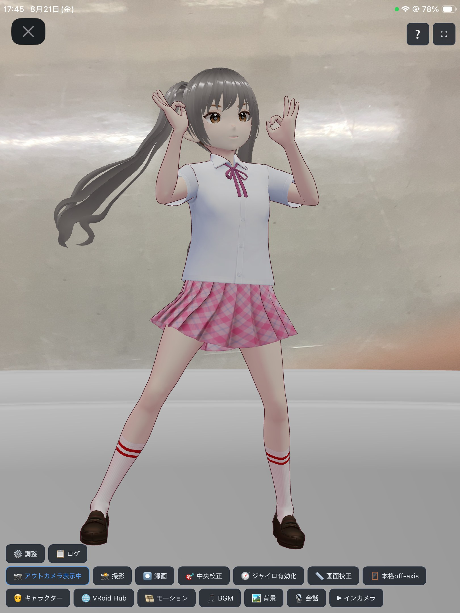

お気に入りの3Dキャラクターに着替えさせて、カメラの前で話しかける。
表情もモーションもBGMも背景も、ぜんぶ自分好みに。
インストール不要、ブラウザを開くだけで会える相棒です。

アプリ下部のツールバーがそのまま機能の入り口。好きな組み合わせを見つけて、自分だけの相棒に育てていけます。
好きな VRM モデルをリストから選択。VRoid Hub からキャラクターやモーション等を追加できます。
VRMA / Mixamo FBX モーションをランダム or 選択再生。表情豊かに動き続けます。
お気に入りの曲をリスト登録し、シーンに合わせて自動再生。
3D空間ごと着せ替え。キャラクターの回転に合わせて背景も一緒に回ります。
Gemini Live とマイクでリアルタイム会話。インカメラ・アウトカメラ・スクリーン映像を個別に見せながら話せます。
端末の回転やインカメラに映る顔の位置に合わせてキャラクターが回転し、画面内に存在しているように表示できます。
ブラウザで開くだけ。インストールは不要です。
キャラクター・モーション・BGM・背景を好きな組み合わせに。
「会話」ボタンから接続して、カメラの前で話しかけてみましょう。